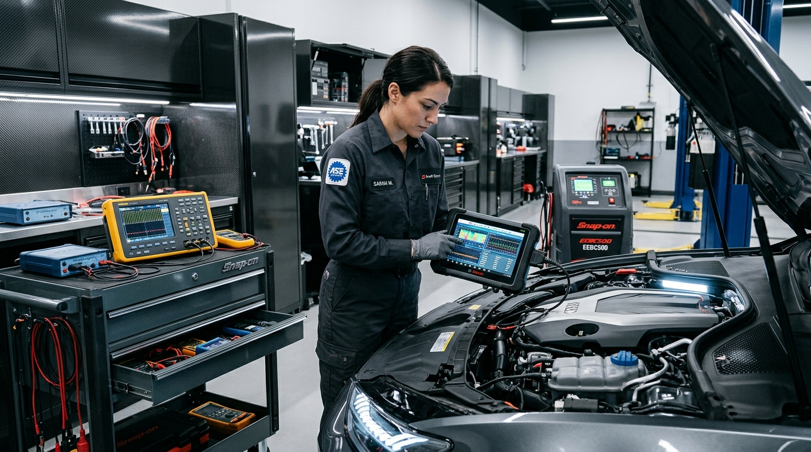

AUTO ELÉTRICA ESPECIALIZADA & DIAGNÓSTICO ELETRÔNICO AVANÇADO
Precisão Eletrônica, Potência e Confiança.


Precisão Eletrônica, Potência e Confiança.
A Solução Definitiva para a Elétrica do Seu Carro.
Diagnóstico computadorizado de injeção e módulos eletrônicos, baterias com entrega e instalação no local, motor de arranque, alternador, ar-condicionado e chicotes elétricos com técnicos certificados e garantia real.
★★★★★ 4.9 / 5.0
Mais de 2.800 motoristas e frotas atendidos com excelência

Scanner OBD-II Avançado
Diagnóstico em Tempo Real
SOS Baterias no Local
Chegamos em até 30 Minutos